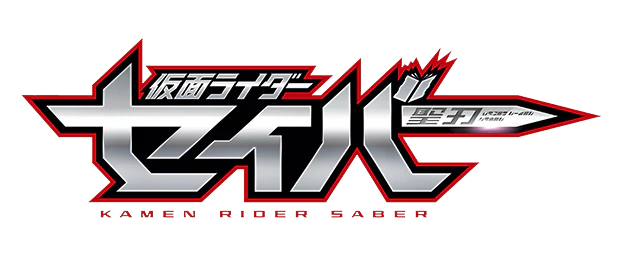
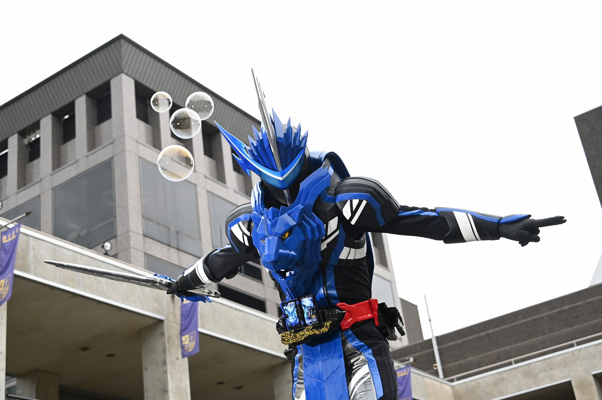
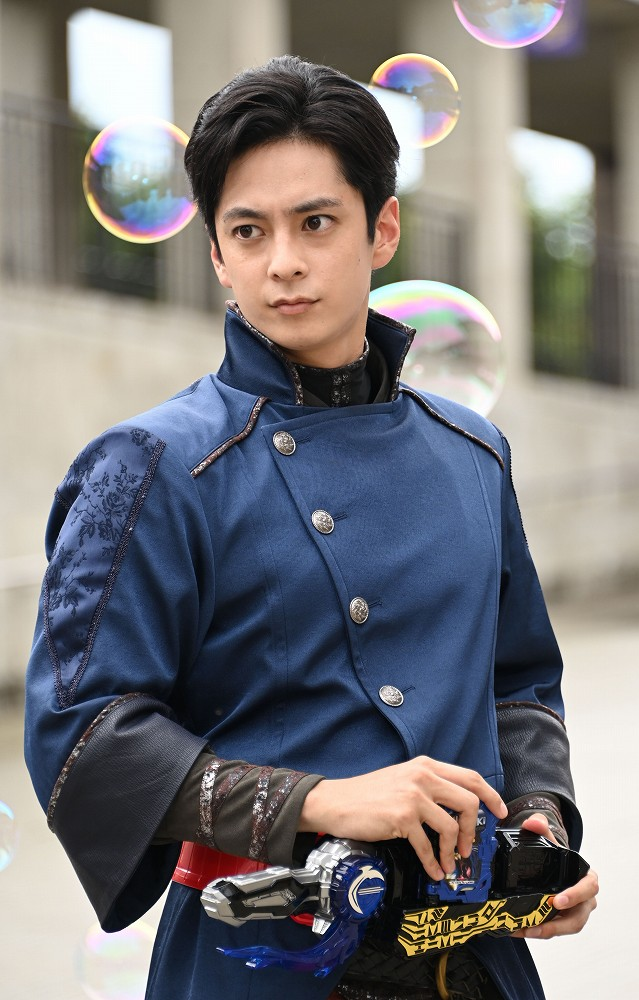
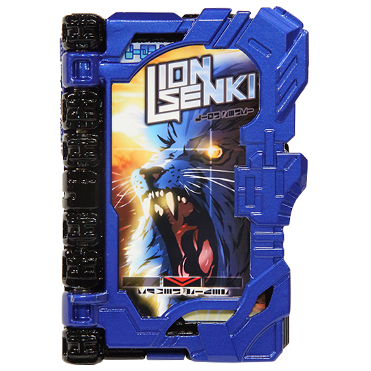
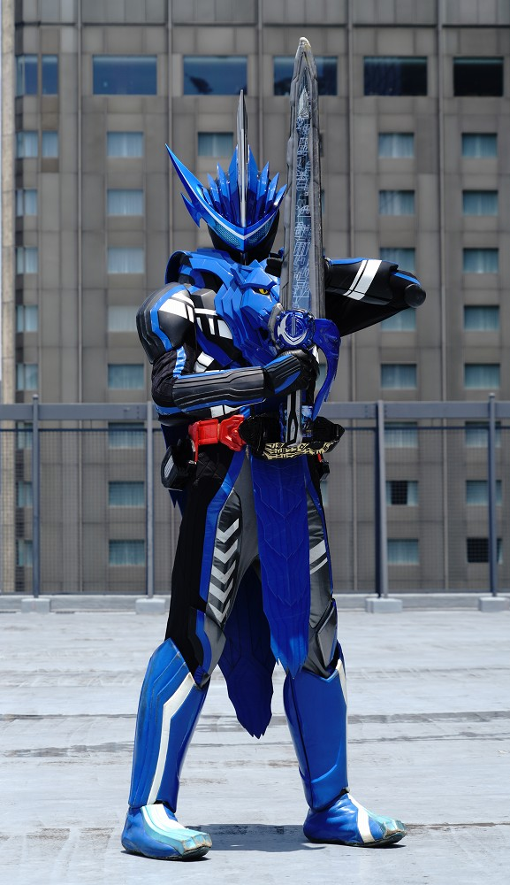
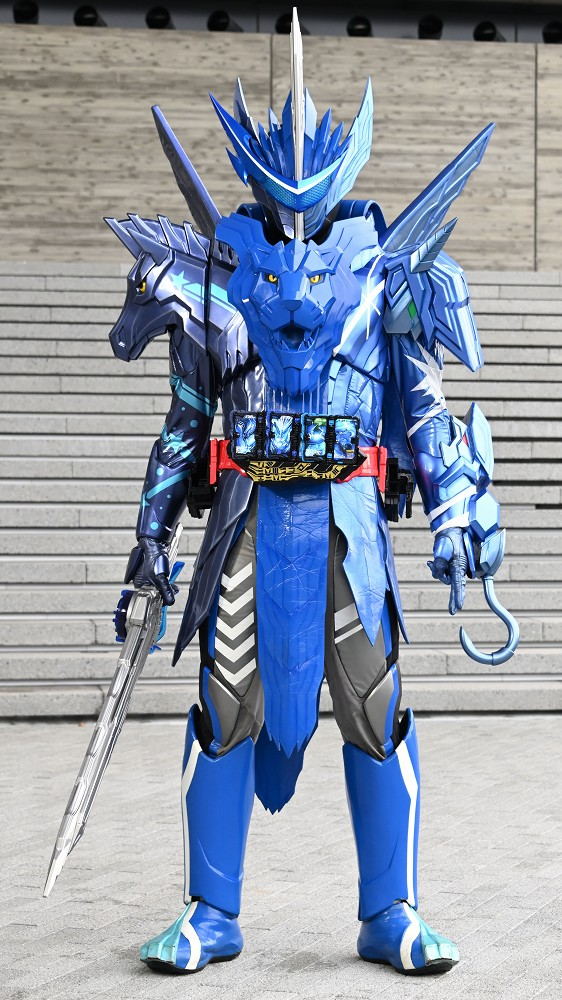
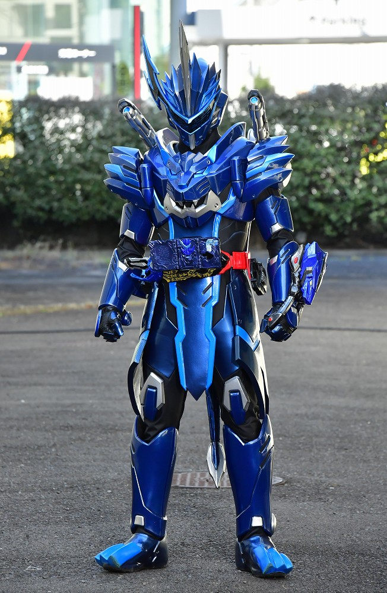
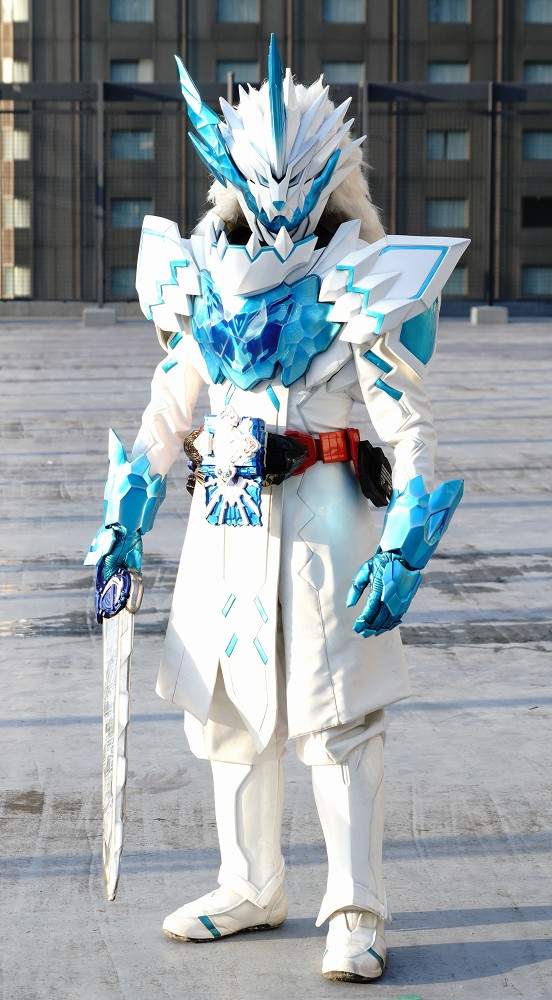

2020年から放送された「仮面ライダーセイバー」に登場する仮面ライダー
変身者は新堂倫太郎。聖剣水勢剣流水と聖剣ソードライバー、ワンダーライドブックを使い、変身する。
基本形態はライオン戦記。強いタイプのホモサピエンス
身長：217cm 体重：98.5kg パンチ力：9.3t キック力:19.2t ジャンプ力：ひと跳び18.2m 走力：100mを4.5秒程度

聖剣ソードライバーに聖剣を納刀。その後、ワンダーライドブックをドライバーに装填。
その後、聖剣を抜刀することで変身が実行される。
聖剣は１０本存在し、水勢剣流水はその一つ。
その名の通り水を操る。

ブレイズは生物の力を持つワンダーライドブックを初期形態で使用する。
ライオン戦記はライオンの力を持ち、
これ単体で使用すると、青いライオンを召喚することができる。

ライオン戦記
「ライオン戦記」ワンダーライドブックで変身
真ん中にライオン戦記の力を宿しており、
水を操ったり、青いライオンを召喚することが可能。
真ん中のライオンの主張が激しい。

ファンタスティックライオン
「天空のペガサス」、「ライオン戦記」、「ピーターファンタジスタ」ワンダーライドブックの３つのライドブックで変身
相性の良い三冊を用いた「ワンダーコンボ」であり、すべての力が上昇、3冊のライドブックに秘められた力をすべて発揮する。
体の液状化などの特殊能力を持つ。

キングライオン大戦記
「キングライオン大戦記」ワンダーライドブックで変身
青い装甲と、両肩のバズーカを搭載しており、防御力、破壊力共に
ライオン戦記を超える。
形態を変化し、自身がライオンになることもできる。

タテガミ氷獣戦記
「タテガミ氷獣戦記」ワンダーライドブックで変身
氷と獣の力を持ち合わせており、それに共鳴して水勢剣流水も氷の聖剣となる。
冷気のフィールドを形成し、自らのテリトリーを作ることができる。
タテガミは変形し、翼やひれなど、陸海空すべてに適応が可能。
仮面ライダー一覧